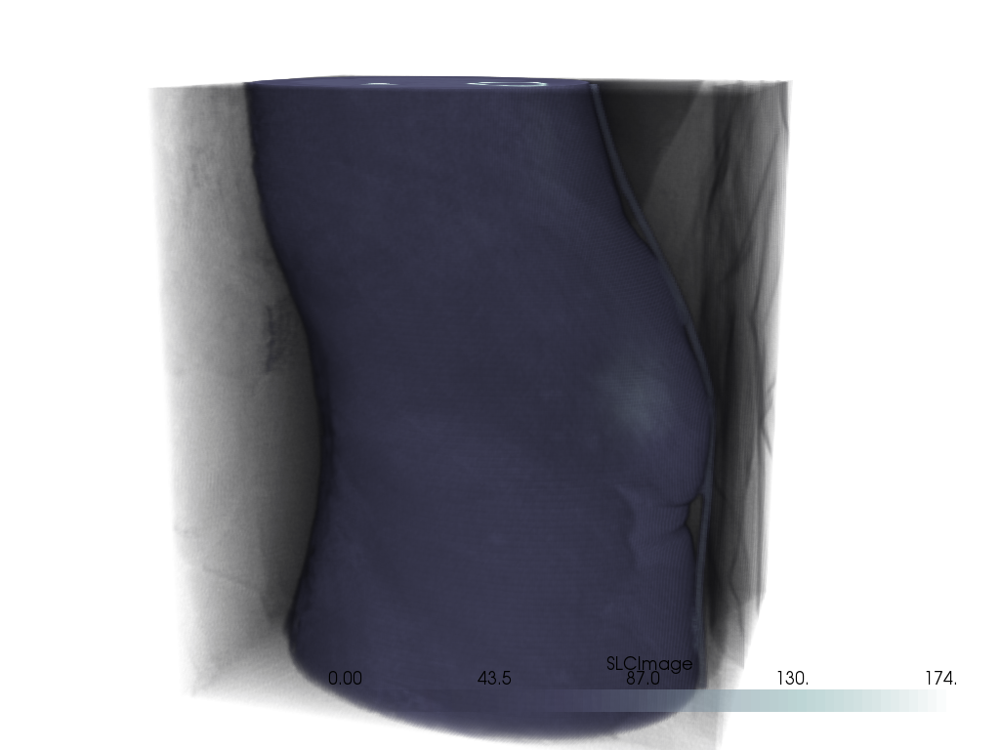
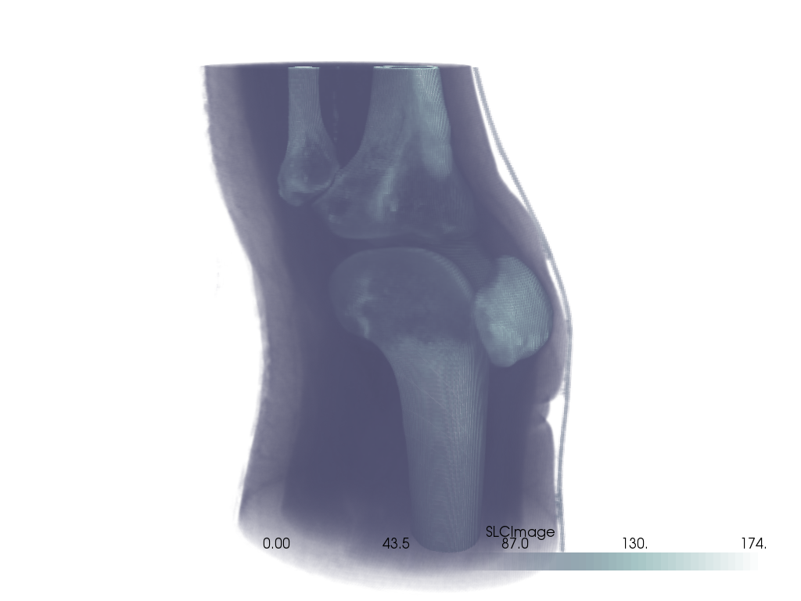
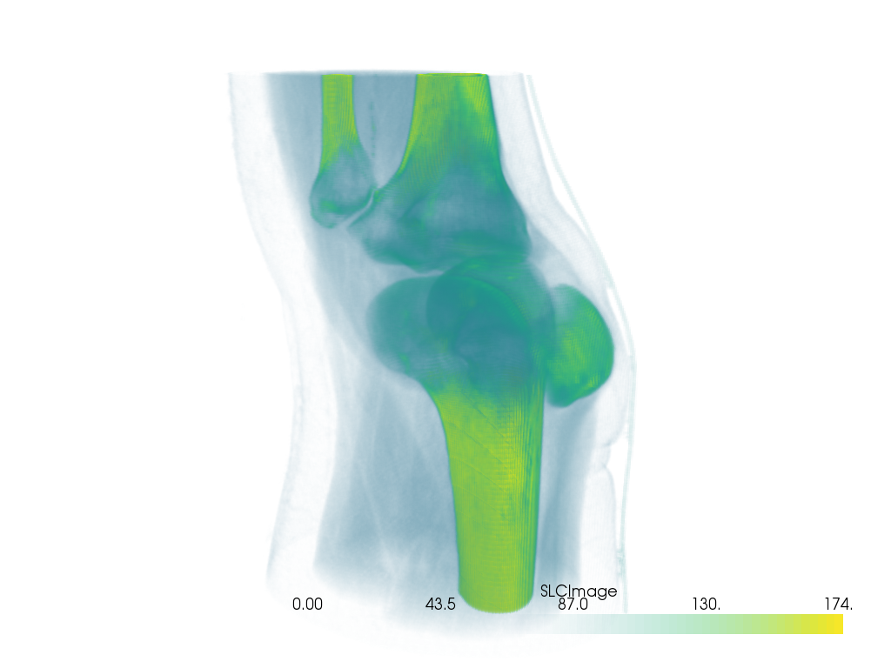
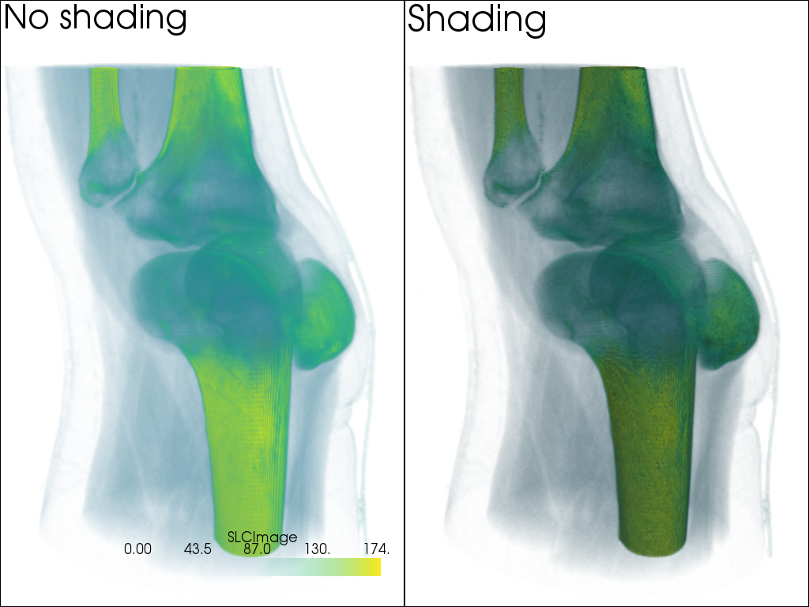
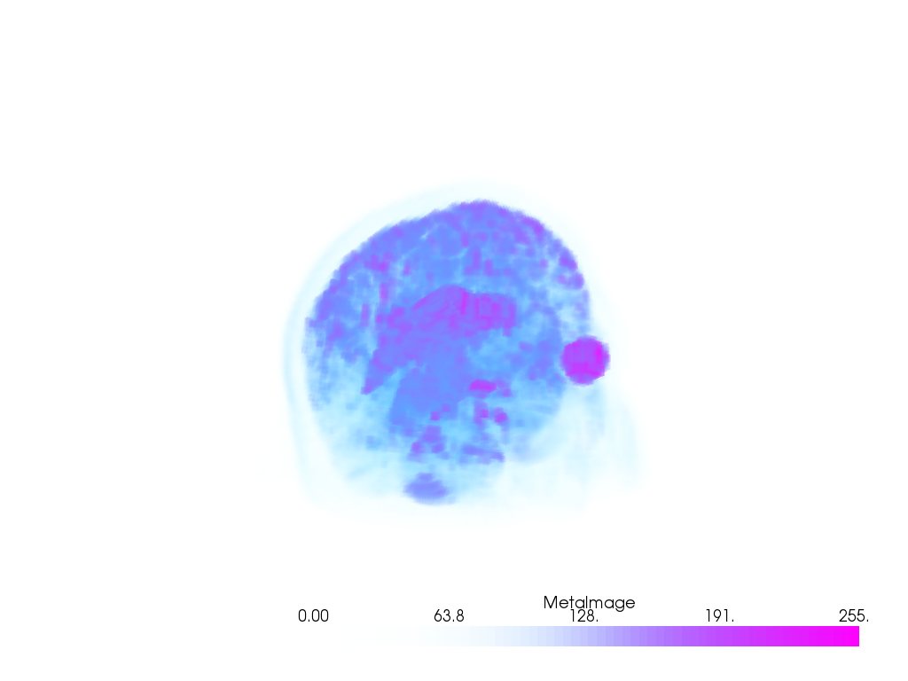
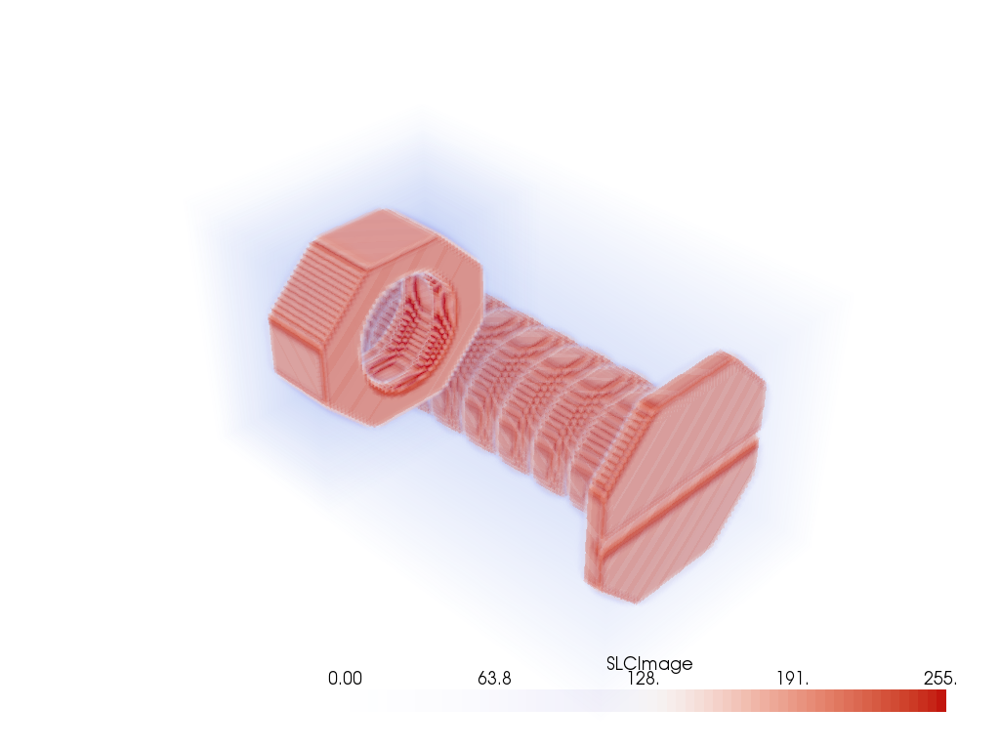
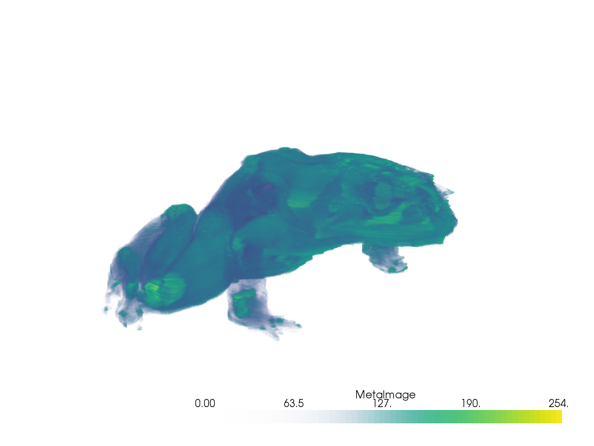
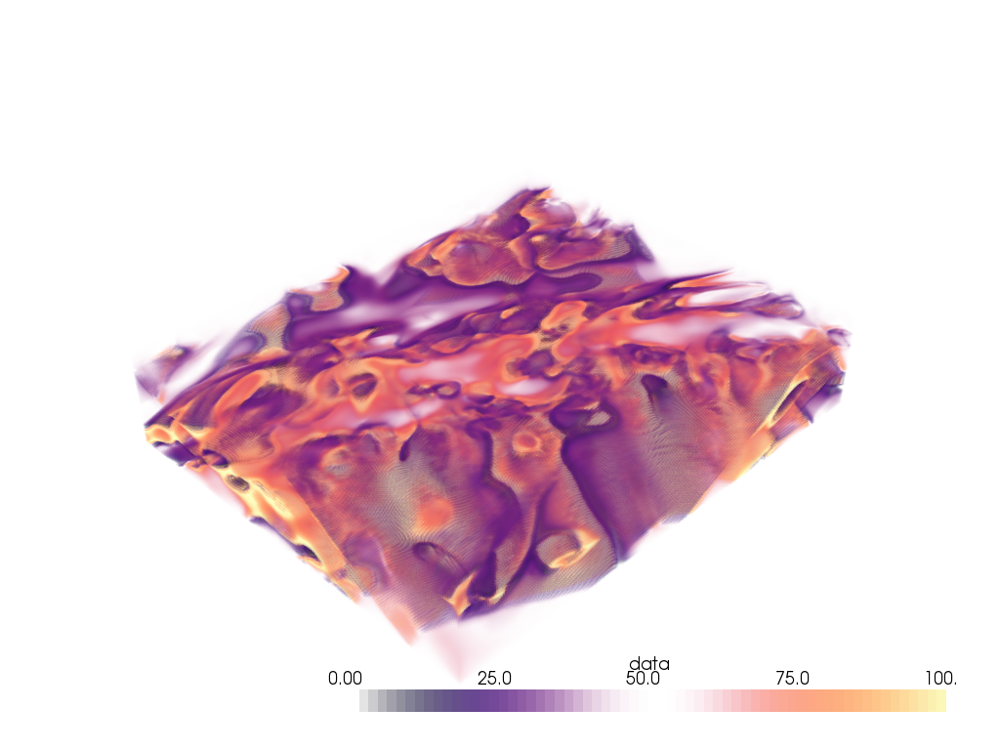
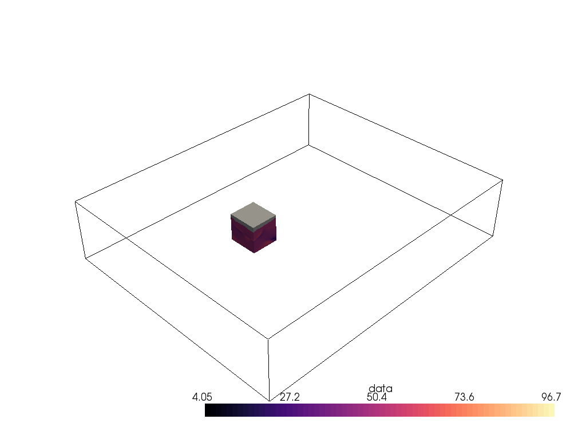
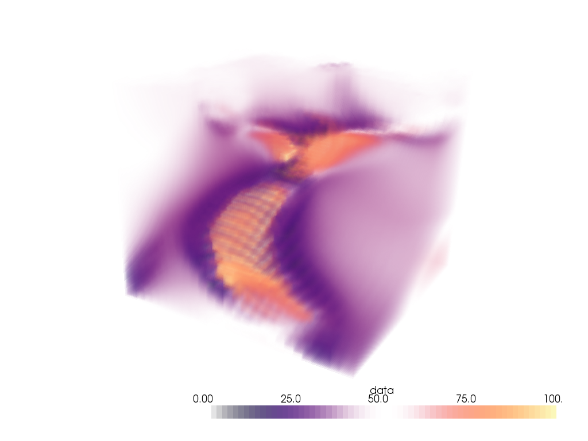

Note
Click here to download the full example code
Volume Rendering¶
Volume render uniform mesh types like pyvista.UniformGrid or 3D
NumPy arrays.
This also explores how to extract a volume of interest (VOI) from a
pyvista.UniformGrid using the
pyvista.UniformGridFilters.extract_subset() filter.
# sphinx_gallery_thumbnail_number = 3
import pyvista as pv
from pyvista import examples
# Volume rendering is not supported with Panel yet
pv.rcParams["use_panel"] = False
# Download a volumetric dataset
vol = examples.download_knee_full()
vol
| Header | Data Arrays | ||||||||||||||||||||||||||||||
|---|---|---|---|---|---|---|---|---|---|---|---|---|---|---|---|---|---|---|---|---|---|---|---|---|---|---|---|---|---|---|---|
|
|
Simple Volume Render¶
# A nice camera position
cpos = [(-381.74, -46.02, 216.54), (74.8305, 89.2905, 100.0), (0.23, 0.072, 0.97)]
vol.plot(volume=True, cmap="bone", cpos=cpos)

Out:
[(-381.74, -46.02, 216.54),
(74.8305, 89.2905, 100.0),
(0.23011692910752757, 0.07203660389453036, 0.9704931358013119)]
Opacity Mappings¶
Or use the pyvista.BasePlotter.add_volume() method like below.
Note that here we use a non-default opacity mapping to a sigmoid:
p = pv.Plotter()
p.add_volume(vol, cmap="bone", opacity="sigmoid")
p.camera_position = cpos
p.show()

Out:
[(-381.74, -46.02, 216.54),
(74.8305, 89.2905, 100.0),
(0.23011692910752757, 0.07203660389453036, 0.9704931358013119)]
You can also use a custom opacity mapping
opacity = [0, 0, 0, 0.1, 0.3, 0.6, 1]
p = pv.Plotter()
p.add_volume(vol, cmap="viridis", opacity=opacity)
p.camera_position = cpos
p.show()

Out:
[(-381.74, -46.02, 216.54),
(74.8305, 89.2905, 100.0),
(0.23011692910752757, 0.07203660389453036, 0.9704931358013119)]
We can also use a shading technique when volume rendering with the shade
option
p = pv.Plotter(shape=(1,2))
p.add_volume(vol, cmap="viridis", opacity=opacity, shade=False)
p.add_text("No shading")
p.subplot(0,1)
p.add_volume(vol, cmap="viridis", opacity=opacity, shade=True)
p.add_text("Shading")
p.link_views()
p.camera_position = cpos
p.show()

Out:
[(-381.74, -46.02, 216.54),
(74.8305, 89.2905, 100.0),
(0.23011692910752757, 0.07203660389453036, 0.9704931358013119)]
Cool Volume Examples¶
Here are a few more cool volume rendering examples
head = examples.download_head()
p = pv.Plotter()
p.add_volume(head, cmap="cool", opacity="sigmoid_6")
p.camera_position = [(-228.0, -418.0, -158.0), (94.0, 122.0, 82.0), (-0.2, -0.3, 0.9)]
p.show()

Out:
[(-228.0, -418.0, -158.0),
(94.0, 122.0, 82.0),
(-0.20628424925175867, -0.309426373877638, 0.928279121632914)]
bolt_nut = examples.download_bolt_nut()
p = pv.Plotter()
p.add_volume(bolt_nut, cmap="coolwarm", opacity="sigmoid_5")
p.show()

Out:
[(206.821456176791, 233.321456176791, 204.821456176791),
(34.5, 61.0, 32.5),
(0.0, 0.0, 1.0)]
frog = examples.download_frog()
p = pv.Plotter()
p.add_volume(frog, cmap="viridis", opacity="sigmoid_6")
p.camera_position = [(929., 1067., -278.9),
(249.5, 234.5, 101.25),
(-0.2048, -0.2632, -0.9427)]
p.show()

Out:
[(929.0, 1067.0, -278.9),
(249.5, 234.5, 101.25),
(-0.20481018239133267, -0.2632130859638611, -0.942746869825729)]
Extracting a VOI¶
Use the pyvista.UniformGridFilters.extract_subset() filter to extract
a volume of interest/subset volume to volume render. This is ideal when
dealing with particularly large volumes and you want to volume render only
a specific region.
# Load a particularly large volume
large_vol = examples.download_damavand_volcano()
large_vol
| Header | Data Arrays | ||||||||||||||||||||||||||||||
|---|---|---|---|---|---|---|---|---|---|---|---|---|---|---|---|---|---|---|---|---|---|---|---|---|---|---|---|---|---|---|---|
|
|
opacity = [0, 0.75, 0, 0.75, 1.0]
clim = [0, 100]
p = pv.Plotter()
p.add_volume(large_vol, cmap="magma", clim=clim,
opacity=opacity, opacity_unit_distance=6000,)
p.show()

Out:
[(962759.682893736, 4390399.944685736, 385481.9418857361),
(552532.741008, 3980173.0028, -24745.0),
(0.0, 0.0, 1.0)]
Woah, that’s a big volume! We probably don’t want to volume render the whole thing. So let’s extract a region of interest under the volcano.
The region we will extract will be between nodes 175 and 200 on the x-axis, between nodes 105 and 132 on the y-axis, and between nodes 98 and 170 on the z-axis.
voi = large_vol.extract_subset([175, 200, 105, 132, 98, 170])
p = pv.Plotter()
p.add_mesh(large_vol.outline(), color="k")
p.add_mesh(voi, cmap="magma")
p.show()

Out:
[(962759.6918857361, 4390399.941885736, 385481.9418857361),
(552532.75, 3980173.0, -24745.0),
(0.0, 0.0, 1.0)]
Ah, much better. Let’s now volume render that region of interest!
p = pv.Plotter()
p.add_volume(voi, cmap="magma", clim=clim, opacity=opacity,
opacity_unit_distance=2000)
p.camera_position = [(531554.5542909054, 3944331.800171338, 26563.04809259223),
(599088.1433822059, 3982089.287834022, -11965.14728669936),
(0.3738545892415734, 0.244312810377319, 0.8947312427698892)]
p.show()

Out:
[(531554.5542909054, 3944331.800171338, 26563.04809259223),
(599088.1433822059, 3982089.287834022, -11965.14728669936),
(0.37385458924157344, 0.24431281037731903, 0.8947312427698894)]
Total running time of the script: ( 2 minutes 33.296 seconds)